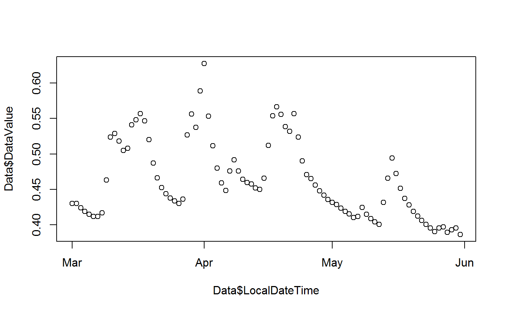

ODMr.RmdThis is an R package for working with an instance of the CUAHSI ODM running on MS-SQL. Works in our office, may or may not be useful to others outside our work-site.
In order to talk to the database, you’ll need to define an ODBC connection on the machine that you’re working on. To do this, go to Control Panel -> Administrative Tools, then choose “Data Sources (ODBC)”. You’ll want to add a “User DSN”.
At this point, it’ll ask you which driver you want to use. You’ll want to choose SQL Server and click finish. Next you’ll want to specify which database you want to talk to. You’ll see a dialogue box with three boxes for you to fill in.
Click next and choose that you want to connect with SQL Server authentication using a username and password given to you by the administrator.
Click “Next” again, and it’ll contact the database to make sure that you have the appropriate permissions. Make sure that you have the “OD” database selected as the default database. Click next again, then finish, and finally, click “Test Data Source” to make sure that everything ran properly.
This will all be easier to use and understand if you have a fundamental understanding of the underlying data model. The model and the underlying motives for it’s design can be found at http://www.cuahsi.org
Here is a quick example. You’ll need the package DBI in order to establish a connection using an ODBC connection. DBI::dbConnect() establishes a connection to the specified DSN and odm_read_tbl() can be used to import the series catalog.
library(ODMr)
ODM <- DBI::dbConnect(odbc::odbc(), dsn = "ODM", database = "ODM", UID = "update",
PWD = "update", Port = 1433)
catalog = odm_read_tbl()Using the established connection and referencing the series catalog we can import data by specifying site_id, variable_id, method_id and level_id.
Data <- odm_read(site_id = 15, variable_id = 3, method_id = 1, level_id = 1,
start_date = "2016-03-01", end_date = "2016-06-01")Multiple data series can be queried at once. The function makes use of the IN operator in the underlying SQL statement to specify multiple values.
There is an addin included in the package. Once the package is installed it should be available under Addins on the main application toolbar of Rstudio.
odm_tools() provides an interactive way of viewing, validating, and/or correcting values.
Base graphics is the default graphics system in R, the easiest to learn to use, but is static.

The dygraphs package offers an R interface to the dygraphs JavaScript charting library. It provides rich facilities for charting time-series data in R, including interactive features including zoom/pan and series/point highlighting.
## Registered S3 method overwritten by 'xts':
## method from
## as.zoo.xts zooYou can also use the odm_tools() addin.
The odm_tools() addin includes a console to evaluate R expressions. You can use the function Data() to access the underlying data for the plot and interact with it. You can also write back to this data using the same function enabling you to make changes to selected points. Useful code bits that can be run in ODMtools are below.
From an active R session in Rstudio you can import csv or excel files using Rstudio.
library(readr)
PC1_CR1000_Weir <- read_csv("PC1_CR1000_Weir.dat",
col_types = cols(TIMESTAMP = col_datetime(format = "%Y-%m-%d %H:%M:%S")))odm_data() can be used to create a dataframe with all the required data for importing into ODM.